Ekran nie gaśnie, usunięte wiadomości da się przeczytać, a linki, emotki i fonty wyglądają tak, jak powinny.
Ten sam czat na każdym ekranie. Strzałkami przejdziesz dalej.
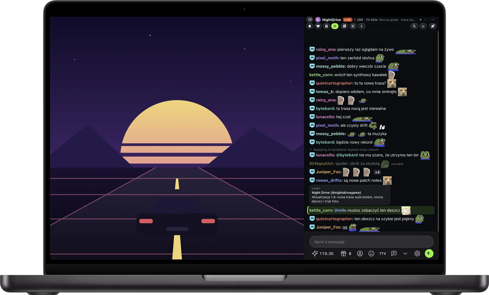
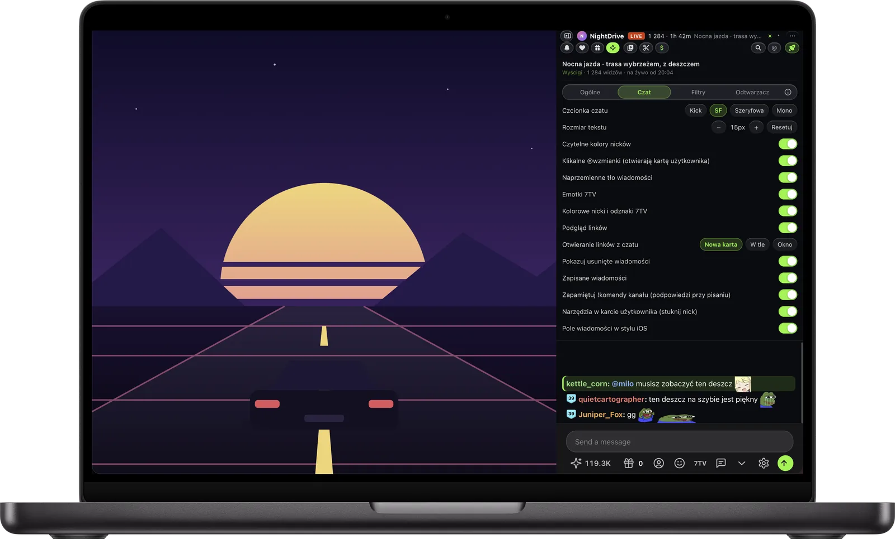
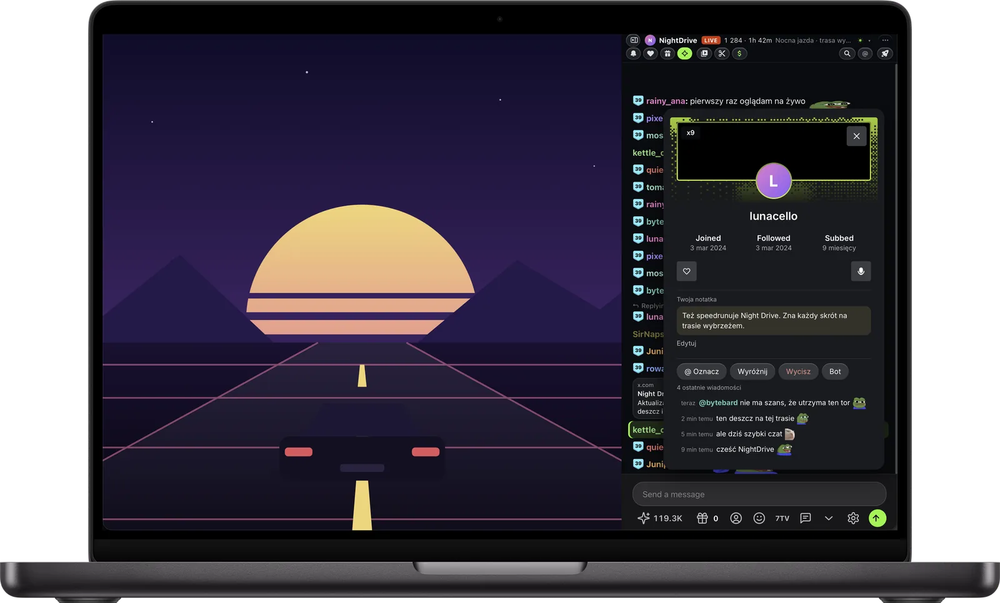
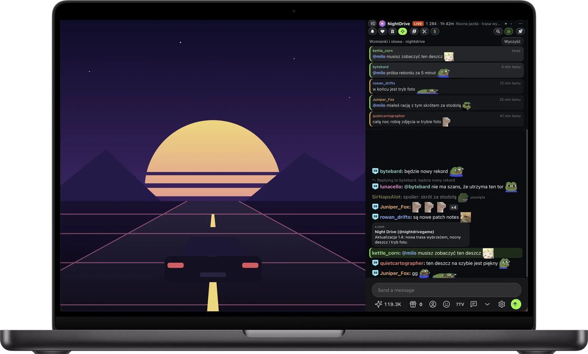
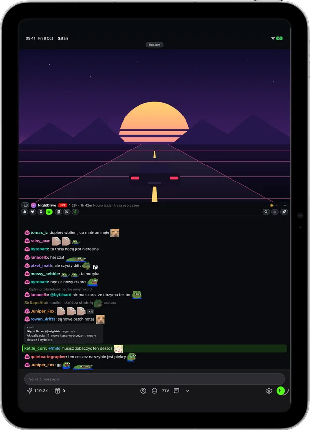
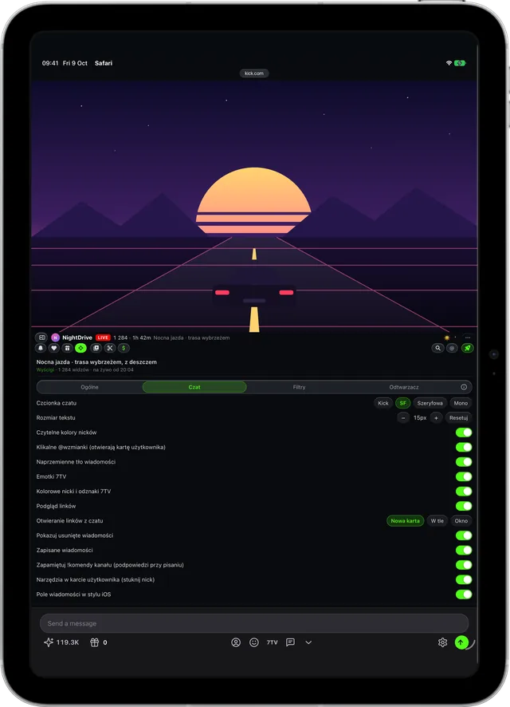
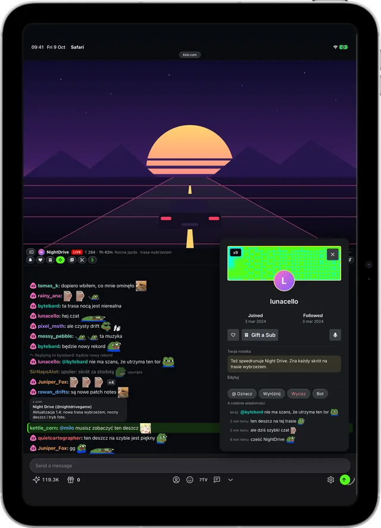
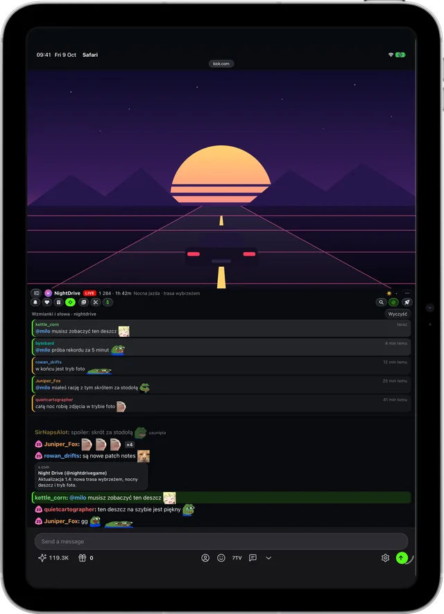
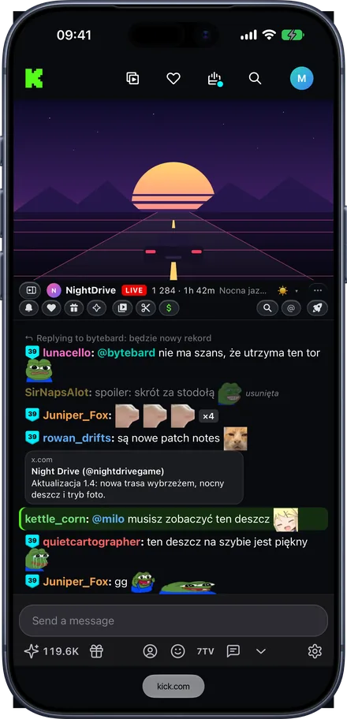
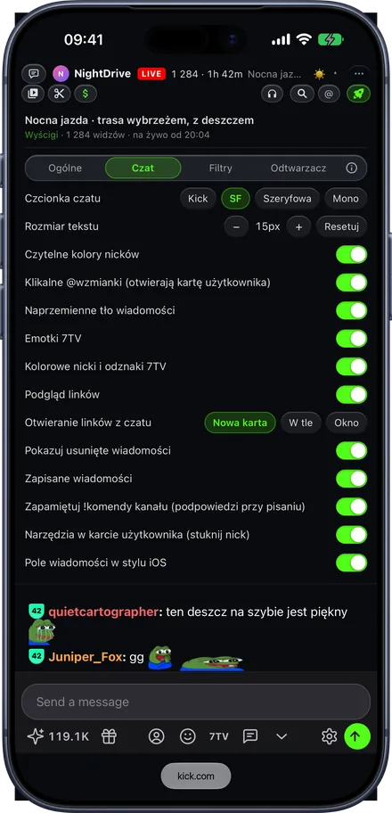
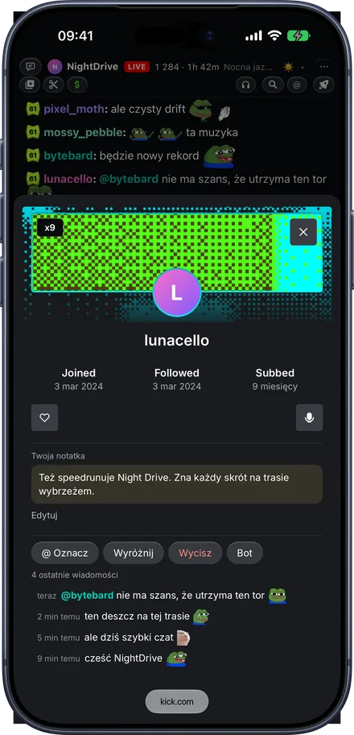
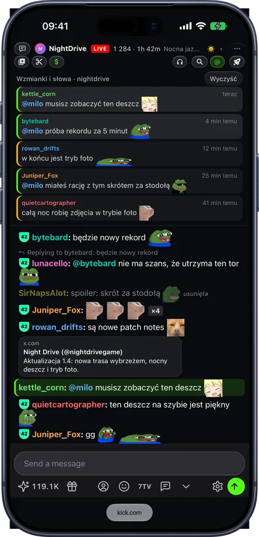
Usunięte wiadomości da się przeczytać, linki pokazują podgląd, widać emotki 7TV, powtarzany spam zwija się do jednej linii, a wzmianki o tobie się wyróżniają.
Rakieta na górze czatu otwiera ustawienia Kickon: fonty Apple, wielkość tekstu i każdą funkcję jako przełącznik, który możesz wyłączyć.
Stuknij nick, by zobaczyć ostatnie wiadomości tej osoby, wyróżnić ją, wyciszyć albo zapisać prywatną notatkę, która synchronizuje się przez twój iCloud.
Skrzynka @ zbiera wiadomości, które wspominają ciebie lub wybrane słowa, więc nadrobisz je po gorącej chwili.
Wszystko włączasz w jednym miejscu: pod rakietą na górze czatu, z ustawieniami w czterech kartach (Ogólne, Czat, Filtry i Odtwarzacz). Wyłącz to, czego nie potrzebujesz.
Mac, iPhone ani iPad nie przyciemni się i nie zablokuje w środku streamu.
Zamiast „Usunięte przez moderatora” widzisz, co ktoś napisał, wyszarzone. Także wiadomości osób z timeoutem lub banem.
Obrazki, YouTube, TikTok i posty z X otwierają się prosto w czacie, bez wychodzenia ze streamu. Otwierane linki mogą trafiać do karty w tle albo osobnego okna, żeby stream został na wierzchu.
Emotki 7TV kanału i globalne, z kolorowymi nickami i odznakami, wybierakiem emotek i podpowiedziami. Własne !komendy kanału zapamiętuje, gdy odpowie na nie bot, i podpowiada po wpisaniu ! (albo $, ?…, jeśli bot kanału używa innego prefiksu). Możesz je też sam dodawać, edytować i usuwać w panelu zapisanych wiadomości.
Skrzynka @ z wiadomościami, które wspominają ciebie lub twoje słowa, i wyszukiwanie w czacie, także from:nick.
Stuknij nick albo jego @wzmiankę w wiadomości, by zobaczyć ostatnie wiadomości tej osoby, oznaczyć ją, wyróżnić, wyciszyć albo zapisać o niej prywatną notatkę. Notatki synchronizują się przez iCloud, a ✎ oznacza osoby, o których coś zapisałeś.
Wyróżnij streamera i swoje słowa. Zwiń wyciszonych użytkowników, boty, powtarzany spam i wiadomości z samych emotek. Nagrody za punkty kanału, suby i prezenty skróć do jednej linii albo ukryj. Jaśniejsze odcienie nieczytelnych kolorów nicków i, jeśli chcesz, naprzemienne tło wiadomości.
San Francisco, New York albo SF Mono zamiast fontu Kicka, z przyciskami + i − do zmiany wielkości tekstu.
„Odtwarzacz” otwiera stream w aplikacji Kickon na Macu, iPhonie i iPadzie, z opóźnieniem jak w odtwarzaczu Kicka, z obrazem w obrazie, AirPlay i dźwiękiem na ekranie blokady. Czat zostaje obok w Safari. Jeden przełącznik, na górze czatu i w aplikacji, przenosi między stroną streamu, samym czatem i odtwarzaczem. Jest też odtwarzacz Safari na stronie, jeśli nie przeszkadza ci większe opóźnienie. Streamy mogą od razu otwierać się w trybie kinowym i z dźwiękiem.
Sam czat w osobnym oknie z informacjami o streamie i przycisk słuchania z wyłącznikiem czasowym, gdy chcesz tylko słyszeć. Nad czatem, w popoucie i na stronie streamu: filmy i klipy kanału oraz przycisk wsparcia, który sam znajduje stronę do napiwków w linkach streamera (albo używa ustawionej przez ciebie).
Rozszerzenia Safari instaluje się jako aplikację. Zainstaluj Kickon i włącz go raz.
Kickon prosi Safari o dostęp do jednej strony i niczego więcej. Nie ma konta, serwera ani analityki. Twoje ustawienia i zapisane wiadomości synchronizują się między Makiem, iPhone’em i iPadem przez twój iCloud.
Do tego blokuje usługi reklamowe i śledzące, które ładuje kick.com, więc strona śledzi cię mniej, a nie bardziej.